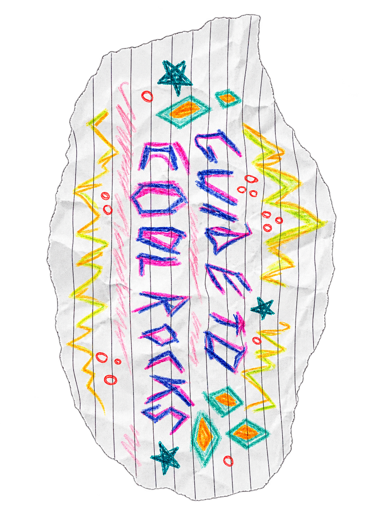
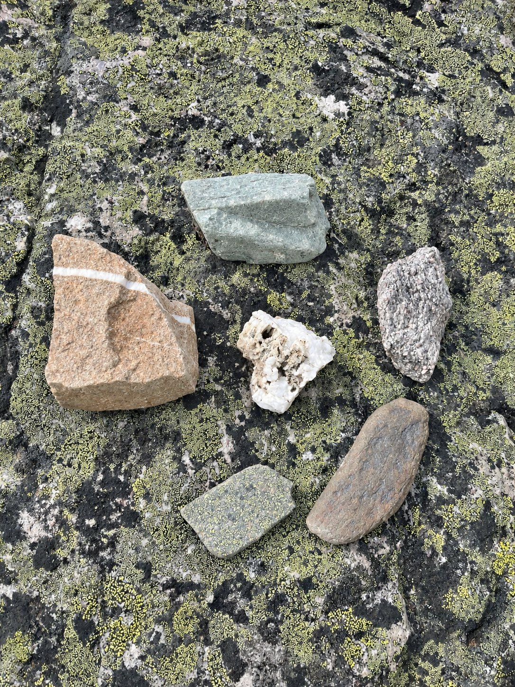

pictured to the right (or bottom) of this writing is my epic rock collection containing various sorts of granite, diorite, and granodiorite (which is basically granite-diorite). also heres a tiny guide i put together for people who want to maximize their sediment sourcing shenanigans (beware of what your getting yourself into as this can be quite the life-changing experience):
- firstly u should choose a location, i find that the best deposits are usually nestled behind burly boulders or peculiar pathways....
- next, most tectonic stocks can be regulated, so make sure to check local rules and dont take from parks!
- after validating the legitimacy of your geological instance, its recommended to take only those u find most alluring and leave the others in order to keep the hobby sustainable (i left a couple shown in the image behind cuz of this)
- and lastly, dont dread that ur curating conundrum is over, as now you can further identify your solid-state aggregate! i like doing mine using old books, and i find that being wrong is okay too. its about the experience for me :) and it can be that way for you too!
